CPN1
Canonical polyadic norm-1 form
Contents
Description
Use CPN1 to create a canonical polyadic (CP) norm-1 tensor, i.e., a CPN1 tensor.
A tensor  can be decomposed into a CP tensor by the sum of 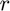 outer products, where is the so called tensor rank. All factors are represented in the so called factor matrices 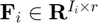 for each dimension
can be decomposed into a CP tensor by the sum of 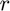 outer products, where is the so called tensor rank. All factors are represented in the so called factor matrices 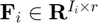 for each dimension  of size
of size  of the original tensor
of the original tensor  up to
up to  , which can be abreviated as
, which can be abreviated as
![$$
\mathrm{T} = \left[\mathbf{F}_1, \mathbf{F}_2, \ldots,
\mathbf{F}_z\right].
$$](CPN1Doc_eq01881340146764122448.png)
An element of is then given by

A CPN1 tensor is a CP tensor where
 for all
for all  from
from  to and for each dimension .
to and for each dimension .
Particularly for mti systems, the parameter tensor factor matrices have dimensions  for the first 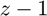 dimensions corresponding to the monomial dimensions and the last dimension called
for the first 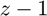 dimensions corresponding to the monomial dimensions and the last dimension called  is saved for parameterization, i.e.,
is saved for parameterization, i.e.,  , such that
, such that
![$$
\mathrm{T} = \left[\mathbf{F}_1, \mathbf{F}_2, \ldots,
\mathbf{F}_{z-1}, \mathbf{F}_{\phi}\right].
$$](CPN1Doc_eq10623834770803925371.png)
For further reference see [1].
Creation
Syntax
CPN1tens = CPN1(Umat,Phimat)
CPN1tens = CPN1(tens)
Description
CPN1tens = CPN1(Umat,Phimat) creates a CP norm-1 tensor Ttens of the form 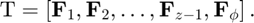
CPN1tens = CPN1(tens) takes a CP decomposed ktensor of the form ![$ \mathrm{T} = \left[\mathbf{F}_1, \mathbf{F}_2, \ldots, \mathbf{F}_{z-1}, \mathbf{F}_{\phi}\right] $](CPN1Doc_eq18142296385811430145.png) from the Tensor Toolbox and creates a CPN1 tensor object
from the Tensor Toolbox and creates a CPN1 tensor object
Input Arguments
Umat - Structure matrix
Structure matrix, which in the context of the MTI, vertically stacks the second row of each CPN1 factor matrix corresponding to each dimension of the monomial. For example for explicit MTI systems:
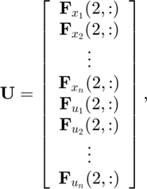
leading to an  by matrix. Note that due to the norm-1, specifying both columns of the monomial factor matrices is redundant.
by matrix. Note that due to the norm-1, specifying both columns of the monomial factor matrices is redundant.
Phimat - Parameter matrix
Parameter matrix, which in the context of the MTI, contains the parameters for each rank element of the tensor. For example for the state transition tensor parameter  for explicit MTI systems, it would lead to a
for explicit MTI systems, it would lead to a  by factor matrix 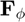.
by factor matrix 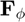.
Output Arguments
CPN1tens - Output tensor
Output tensor returned as:
- A CP norm-1 (CPN1) tensor object.
Properties
U - Structure matrix
Structure matrix, which for MTI parameter tensors correspond to the monomial dimension by the rank .
phi - Parameter matrix
Parameter matrix, which for MTI parameter tensors correspond to the parameters of each equation by the rank .
Examples
SISO Multilinear Time-Invariant State-Space Model
Create the state-transition tensor of a SISO MTI state-space model defined by the following system equations:


The model has the following parameter matrix

and monomial vector

The same parameter matrix can be presented in CPN1 format as:
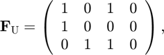
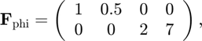
Initializing the tensor in CPN1 format
F_U = [1 0 1 0;
1 0 0 0;
0 1 1 0];
F_phi = [1 0.5 0 0;
0 0 2 7];
F=CPN1(F_U,F_phi);
Normalizing CP tensor to CPN1 tensor object
Create a ktensor for the mti system above with factor matrices
Fx1=[0 1 0 1;1 0 1 0]; Fx2=[0 1 1 1;1 0 0 0]; Fu=[1 0 0 1;0 1 1 0]; FPhi=[1 0.5 0 0;0 0 2 7]; lambda=[1;1;1;1]; CPtens=ktensor(lambda,Fx1,Fx2,Fu,FPhi);
Create a CPN1 tensor object by normalization
CPN1tens=CPN1(CPtens);
References
[1] Lichtenberg, Gerwald; Pangalos, Georg; Cateriano Yáñez, Carlos; Luxa, Aline; Jöres, Niklas; Schnelle, Leona; Kaufmann, Christoph (2022): Implicit multilinear modeling. In at - Automatisierungstechnik 70 (1), pp. 13–30. DOI: 10.1515/auto-2021-0133.